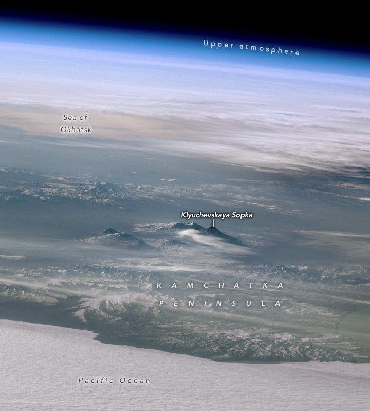

Kamchatka Peaks Pierce the Clouds
An astronaut aboard the International Space Station captured this photograph of the Kamchatka Peninsula in Russia’s Far East region. The highly oblique image gives an enhanced sense of the topography and captures the width of the peninsula, which stretches over 350 kilometers (215 miles) from the cloud-blanketed Pacific Ocean to the Sea of Okhotsk. Above the Sea of Okhotsk, clouds in the lower atmosphere appear white, and the upper atmosphere is blue. Snow and ice flank the peaks of mountain ranges and volcanoes, while low clouds fill the valleys.
The highest peaks of the Kamchatka Peninsula are at the center of the image. Klyuchevskaya Sopka is the tallest, at 4,754 meters (15,597 feet) above sea level. Nearby peaks include Vulkan Kamen’ (4,585 meters/15,043 feet) and Gora Ostryy Tolbachik (3,611 meters/11,847 feet). These stratovolcanoes make up part of the Klyuchevskoy Volcanic Group (KVG) that also includes Gora Bol’shaya Udina, Gora Oval’naya Zimina, and the frequently active Vulkan Bezymyannyy. The KVG is bordered by the Vostochnyy Khrebet (Eastern Range) that lines the Pacific coast of the peninsula and the Sredinny Khrebet (Central Range) that extends through the center of Kamchatka like a spine.
As part of the “Ring of Fire”, the peninsula experiences frequent tectonic activity. On July 29, 2025, two months after this photograph was taken, a magnitude 8.8 earthquake occurred with its epicenter approximately 380 kilometers (236 miles) south of the Klyuchevskoy Volcanic Group. The earthquake coincided with the intensification of volcanic activity, including the eruption of the highest peak in this image, Klyuchevskaya Sopka, and the long-inactive volcano, Krasheninnikova (just out of frame to the left). Some geologists note that earthquakes can provide the final impetus for eruptions that were already building.